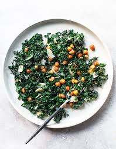

Kale Salad

This is Kenji's scientific approach to the world's greatest Kale Salad. Enjoy!
Ingredients
- 1 Pound of Kale - remove stems and roughly chop leaves
- 3 tbs olive oil
- 1 red onion, thinly sliced and rinse under warm water
- 1 tsp ground sumac
- 1/2 tsp toasted sesame seeds
- 1 tbs lemon juice
- 1 medium garlic clove grated or mined
- 2 tbs dijon mustard
- 1 14oz can of chickpeas
- Kosher Salt and Fresh Ground Pepper
Steps
- Massage Kale with Olive oil for two minutes. Set aside for 15 minutes
- Combine the onions with the Sumac and sesame seeds. Combine lemon juice, garlic and mustard in small bowl.
- Add lemon juice mixture and chickpeas to kale. Season and top with sumac onions.